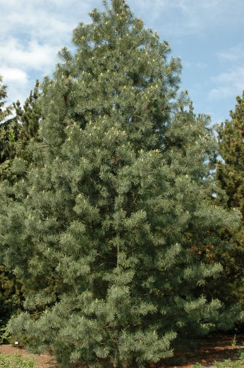

Сосна румелийская

Описание товара:
Сосна́ румели́йская, или балка́нская, или македо́нская. Pinus peuce
Характеристики товара:
-
Происхождение: Горные районы южной и юго-восточной Европы: Албания, Болгария, Греция, Македония, Сербия,
Черногория, Югославия.
- Диаметр горшка: 30 см
- Освещение: светолюбивая
-
Уход: Зимостойка, теневынослива наравне с сосной веймутовой, также умеренно требовательна к плодородию
почв. Имеет преимущества перед другими 5-хвойными соснами в большей устойчивости к городским условиям.
-
Примечания: Обладает ценной, как у сосны веймутовой, древесиной, поэтому возможна закладка лесоплантаций,
защитных полос, массивов, так как в отличие от сосны веймутовой в группе не страдает от заболеваний и вредителей.